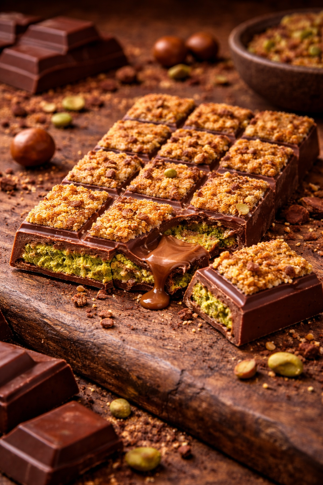
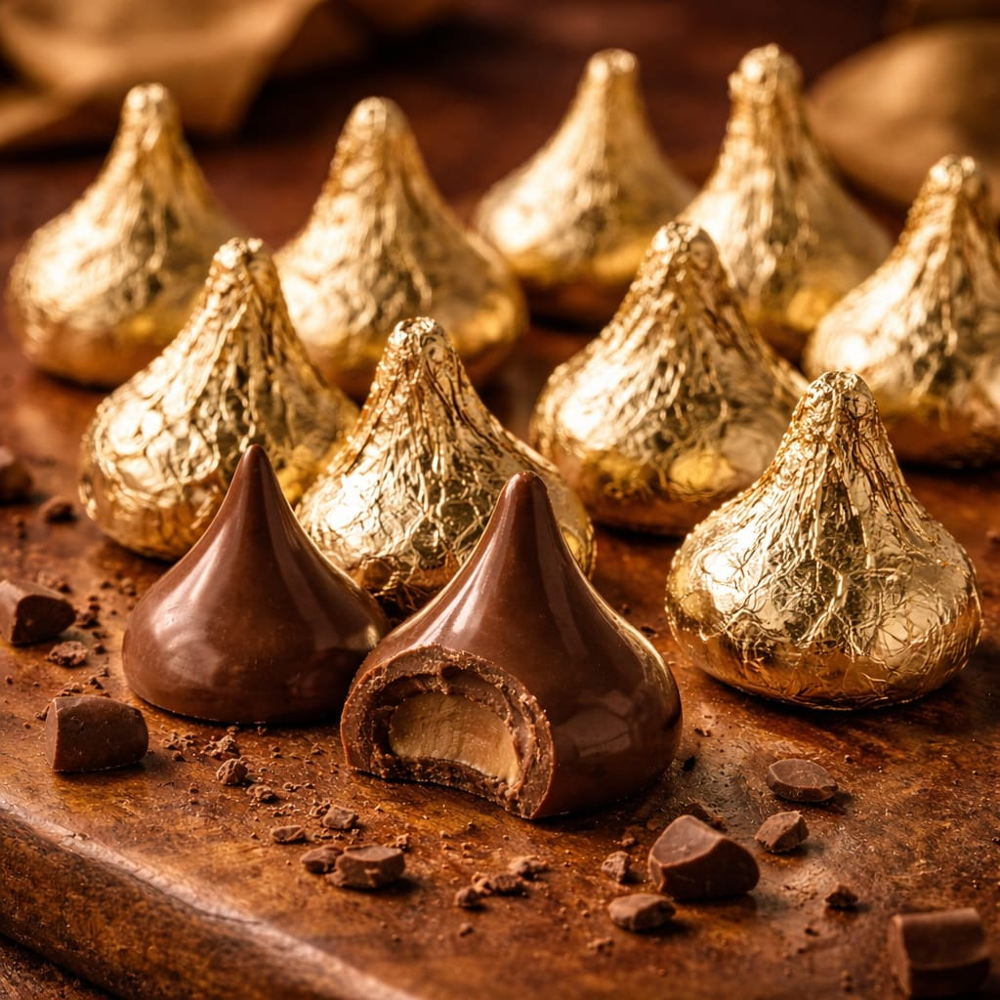

Click Here
Click Here
Click HereA Kunafa Chocolate Bar is a unique dessert that combines traditional Middle Eastern flavors with rich chocolate. It is inspired by the famous dessert Knafeh (also called Kunafa), which is known for its crispy vermicelli pastry and sweet filling. This chocolate bar has recently become popular on social media and among dessert lovers because of its crunchy and creamy texture. Some versions of the Kunafa chocolate bar also include nuts such as pistachios or almonds to enhance the taste and provide extra crunch. The combination of chocolate and kunafa creates a perfect balance of sweetness, crispiness, and richness, making it a special and modern fusion dessert. Kunafa chocolate bars are often made by artisan chocolatiers and dessert brands. They are commonly sold in premium chocolate stores and dessert cafés and are popular as gifts 🎁 or luxury treats during celebrations and festivals 🎉.Because of its creative fusion of traditional Middle Eastern dessert and modern chocolate, the Kunafa chocolate bar has become a trendy and delicious dessert loved by people around the world 🌍✨.
Click HereFerrero Rocher is a premium chocolate made by the Italian company Ferrero. It was first introduced in 1982 and quickly became one of the most popular luxury chocolates in the world 🌍. Ferrero Rocher is known for its unique combination of taste, texture, and elegant packaging 🎁. Each Ferrero Rocher chocolate consists of a whole roasted hazelnut 🌰 at the center, surrounded by a creamy hazelnut filling and a thin wafer shell. The wafer is then coated with milk chocolate 🍫 and covered with small pieces of roasted hazelnuts. Finally, it is wrapped in a distinctive golden foil ✨ and placed in a paper cup, giving it a rich and attractive appearance. Ferrero Rocher is widely used for gifting during special occasions such as festivals 🎉, celebrations 🎊, and parties 🥳. Its luxurious look and delicious taste make it a favorite choice for chocolate lovers around the world ❤️. The brand represents quality, elegance, and indulgence, which is why it remains one of the most recognized premium chocolates globally 🌟.

Hershey's Kisses are small, cone-shaped chocolates produced by The Hershey Company. They were first introduced in 1907 and quickly became one of the most famous chocolate candies in the world. The name “Kisses” is believed to come from the sound or motion of the chocolate being deposited on the conveyor belt during production. Hershey’s Kisses are mainly made from smooth milk chocolate and are individually wrapped in shiny foil. One special feature is the small paper strip called a “plume” that sticks out from the top of the wrapper, which helps people easily recognize the brand. Over the years, the company has introduced many flavors such as dark chocolate, almond, caramel, cookies and cream, and mint, giving chocolate lovers many options to enjoy. These chocolates are very popular for sharing, gifting, and decorating desserts. People often use Hershey’s Kisses in baking cookies, brownies, cupcakes, and other sweet treats. They are also widely used during holidays and celebrations like Christmas 🎄, Valentine’s Day ❤️, Easter 🐣, and birthdays 🎉 because their colorful wrappers make them look festive and attractive. Today, Hershey’s Kisses are sold in many countries and are loved by people of all ages. Their unique shape, delicious taste, and iconic packaging have made them one of the most recognizable chocolates in the world 🌍✨.
 Click Here
Click HereLindt Lindor is a premium chocolate created by the Swiss company Lindt & Sprüngli. Lindt is a famous chocolatier founded in 1845 in Switzerland and is well known around the world for producing high-quality luxury chocolates. Lindt Lindor is one of the company’s most popular products and is loved for its smooth texture and rich taste. Lindt Lindor chocolates are round truffles with a thin chocolate shell on the outside and a smooth, creamy chocolate filling inside. When you bite into the shell, the center melts smoothly in your mouth, creating a rich and indulgent chocolate experience. This special melting filling is a type of chocolate ganache, which gives Lindor its famous soft and creamy texture. The Lindor chocolate was first created as a chocolate bar in 1949, and later the famous Lindor truffle was introduced in the 1960s. What started as a seasonal treat eventually became one of the most popular chocolates worldwide. Today, billions of Lindor truffles are produced each year and sold in many countries. Lindt Lindor comes in many delicious flavors such as milk chocolate 🥛🍫, dark chocolate 🌑, white chocolate 🤍, hazelnut 🌰, caramel, and many seasonal varieties. The chocolates are wrapped in colorful foil wrappers, making them perfect for gifting during celebrations, festivals, and special occasions 🎁🎉. Because of its luxurious taste, elegant packaging, and smooth melting center, Lindt Lindor is considered one of the most famous premium chocolates in the world 🌍✨.